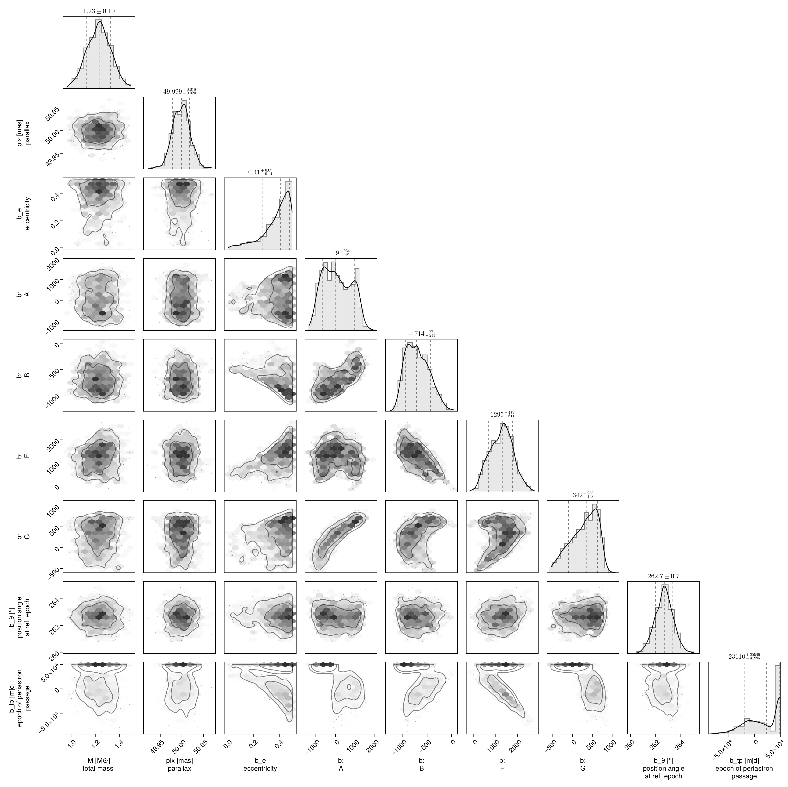
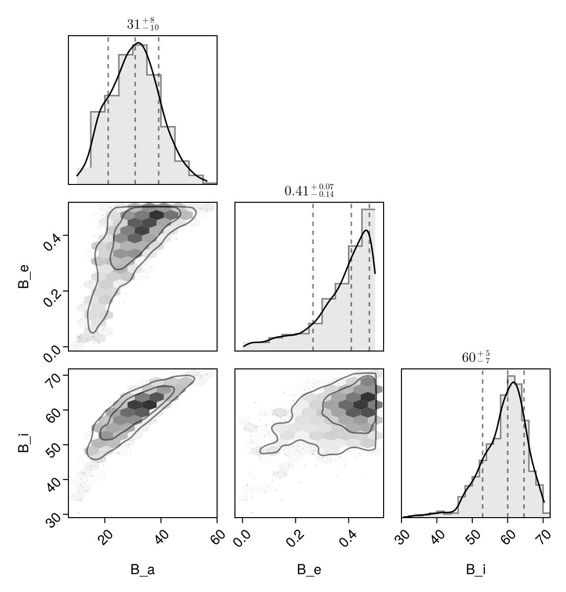

Fit with a Thiele-Innes Basis
This example shows how to fit relative astrometry using a Thiele-Innes orbital basis instead of the traditional Campbell basis used in other tutorials. The Thiele-Innes basis is more suitable then Campbell for fitting low-eccentricity orbits, because it does not have the issues where ω, Ω, and tp become degenerate as eccentricity and/or inclination fall to zero.
At the end, we will convert our results back into the Campbell basis to compare.
using Octofitter
using CairoMakie
using PairPlots
using Plots:Plots
using Distributions
astrom_like = PlanetRelAstromLikelihood(
(epoch = 50000, ra = -505.7637580573554, dec = -66.92982418533026, σ_ra = 10, σ_dec = 10, cor=0),
(epoch = 50120, ra = -502.570356287689, dec = -37.47217527025044, σ_ra = 10, σ_dec = 10, cor=0),
(epoch = 50240, ra = -498.2089148883798, dec = -7.927548139010479, σ_ra = 10, σ_dec = 10, cor=0),
(epoch = 50360, ra = -492.67768482682357, dec = 21.63557115669823, σ_ra = 10, σ_dec = 10, cor=0),
(epoch = 50480, ra = -485.9770335870402, dec = 51.147204404903704, σ_ra = 10, σ_dec = 10, cor=0),
(epoch = 50600, ra = -478.1095526888573, dec = 80.53589069730698, σ_ra = 10, σ_dec = 10, cor=0),
(epoch = 50720, ra = -469.0801731788123, dec = 109.72870493064629, σ_ra = 10, σ_dec = 10, cor=0),
(epoch = 50840, ra = -458.89628893460525, dec = 138.65128697876773, σ_ra = 10, σ_dec = 10, cor=0),
)
@planet b ThieleInnesOrbit begin
e ~ Uniform(0.0, 0.5)
A ~ Normal(0, 10000) # milliarcseconds
B ~ Normal(0, 10000) # milliarcseconds
F ~ Normal(0, 10000) # milliarcseconds
G ~ Normal(0, 10000) # milliarcseconds
θ ~ UniformCircular()
tp = θ_at_epoch_to_tperi(system,b,50000.0) # reference epoch for θ. Choose an MJD date near your data.
end astrom_like
@system TutoriaPrime begin
M ~ truncated(Normal(1.2, 0.1), lower=0)
plx ~ truncated(Normal(50.0, 0.02), lower=0)
end b
model = Octofitter.LogDensityModel(TutoriaPrime)LogDensityModel for System TutoriaPrime of dimension 9 with fields .ℓπcallback and .∇ℓπcallback
We now sample from the model as usual:
using Random
Random.seed!(0)
results = octofit(model)Chains MCMC chain (1000×24×1 Array{Float64, 3}):
Iterations = 1:1:1000
Number of chains = 1
Samples per chain = 1000
Wall duration = 6.29 seconds
Compute duration = 6.29 seconds
parameters = M, plx, b_e, b_A, b_B, b_F, b_G, b_θy, b_θx, b_θ, b_tp
internals = n_steps, is_accept, acceptance_rate, hamiltonian_energy, hamiltonian_energy_error, max_hamiltonian_energy_error, tree_depth, numerical_error, step_size, nom_step_size, is_adapt, loglike, logpost, tree_depth, numerical_error
Summary Statistics
parameters mean std mcse ess_bulk ess_tail ⋯
Symbol Float64 Float64 Float64 Float64 Float64 Flo ⋯
M 1.2275 0.0990 0.0045 486.7490 459.3631 1. ⋯
plx 49.9985 0.0207 0.0007 933.8241 452.2191 1. ⋯
b_e 0.3749 0.1137 0.0055 384.7954 439.2085 1. ⋯
b_A 85.2920 705.4816 47.7350 223.3921 482.3981 1. ⋯
b_B -696.1957 237.0551 14.0818 290.4182 327.1849 1. ⋯
b_F 1260.2510 526.2362 29.8601 299.5106 273.3509 1. ⋯
b_G 284.8611 333.4822 25.9489 184.1680 201.1275 1. ⋯
b_θy -0.1275 0.0125 0.0005 550.1734 418.7162 0. ⋯
b_θx -0.9934 0.0192 0.0008 649.9230 666.1306 1. ⋯
b_θ -1.6985 0.0125 0.0006 486.2484 415.8649 1. ⋯
b_tp 17579.1579 32915.3008 1714.1585 458.2107 713.1739 1. ⋯
2 columns omitted
Quantiles
parameters 2.5% 25.0% 50.0% 75.0% 97.5% ⋯
Symbol Float64 Float64 Float64 Float64 Float64 ⋯
M 1.0305 1.1585 1.2288 1.2941 1.4210 ⋯
plx 49.9594 49.9845 49.9991 50.0122 50.0384 ⋯
b_e 0.0683 0.3247 0.4101 0.4634 0.4971 ⋯
b_A -1036.0191 -525.1790 19.2463 689.8820 1317.5559 ⋯
b_B -1069.2392 -886.1339 -714.3907 -531.0684 -197.9638 ⋯
b_F 278.2804 875.9919 1294.8708 1626.8834 2277.1757 ⋯
b_G -429.8566 49.6584 341.9739 565.9241 754.3299 ⋯
b_θy -0.1520 -0.1360 -0.1272 -0.1197 -0.1030 ⋯
b_θx -1.0334 -1.0058 -0.9928 -0.9799 -0.9572 ⋯
b_θ -1.7236 -1.7069 -1.6985 -1.6904 -1.6735 ⋯
b_tp -50105.3564 -9523.9122 23110.3859 48626.4437 49874.0436 ⋯
Notice that the fit was very very fast! The Thiele-Innes orbital paramterization is easier to explore than the default Campbell in many cases.
We now display the results:
octoplot(model,results)
octocorner(model, results, small=false)
Conversion back to Campbell Elements
To convert our chain into the more familiar Campbell parameterization, we have to do a few steps. We start by turning the chain table into a an array of orbit objects, and then convert their type:
orbits_ti = Octofitter.construct_elements(results, :b, :) # colon means all rows1000-element Vector{ThieleInnesOrbit{Float64}}:
ThieleInnesOrbit{Float64}(0.3248350535384236, 12381.356931879054, 1.1958915519434496, 49.986537953476024, 299.32950906511354, -665.8631455787976, 1132.9014118548932, 332.13117260382455, -18.731238413134218, 2.520291649983408, 38662.36690348315, 0.059357059807820474, 1.4007994485387858)
ThieleInnesOrbit{Float64}(0.3308248457988769, 12805.523526099845, 1.1854485836652153, 49.976485298480576, 300.7757631615121, -677.0197242092435, 1118.445565220548, 339.4403101619041, -18.24032515206058, 2.339736024442938, 38225.77125343558, 0.0600350064721243, 1.4102319388365485)
ThieleInnesOrbit{Float64}(0.4172843394969951, -15701.5427928438, 1.2143471848792435, 50.00384477572612, -13.528953602027622, -847.2653648180126, 1658.9560565503202, 331.83314038967933, -29.57043948652306, -4.106100373041633, 65947.34355746332, 0.03479873943068377, 1.5595530386419842)
ThieleInnesOrbit{Float64}(0.424049191459783, -30835.994013676318, 1.2227712708762224, 49.993840041707685, -73.66866700663641, -874.4638598139294, 1889.2397487532733, 422.579610391235, -35.00257285022855, -5.814815286482774, 80933.63434519265, 0.02835513866600828, 1.572424491578299)
ThieleInnesOrbit{Float64}(0.46336468620266397, 49883.71328023096, 1.2898960655703753, 49.956794890870626, -169.39876750524888, -955.5086417288694, 1999.843517471488, 442.9864775821389, -37.03764281149861, -8.244230042919812, 86979.6246990236, 0.026384161032459705, 1.6513406090549516)
ThieleInnesOrbit{Float64}(0.37508074547988524, 49899.133516530725, 1.2308817173925757, 49.9813168927759, -139.48441123745877, -824.2129905285113, 1723.1777389929725, 393.95758478116545, -31.955196532692945, -7.078459515080411, 71309.09109983114, 0.03218221392541886, 1.4833790716719653)
ThieleInnesOrbit{Float64}(0.4766888681431949, 48032.8443647761, 1.1799066838060663, 49.98150762095602, -938.599466096399, -914.2891715340492, 835.7504771064102, -304.93374900296254, -9.441410794502428, -21.43796358182735, 49456.54446583236, 0.04640203737217015, 1.6798268317675555)
ThieleInnesOrbit{Float64}(0.47263796596796703, 48138.97286471294, 1.1616965357930245, 49.9825648682582, -912.4691826350103, -917.9794221653378, 933.7850538437274, -287.2442611126994, -11.485597596056222, -20.504855866158557, 51093.87034514208, 0.044915063374527504, 1.6710658576490696)
ThieleInnesOrbit{Float64}(0.4547747951301922, 49357.55197991962, 1.2025244208612496, 49.981523344311974, -399.224458485091, -988.2122865354677, 1724.3033076279087, 304.5430239965568, -30.65151722598469, -12.920323601098671, 75994.92282348563, 0.03019786505912119, 1.6334653328201094)
ThieleInnesOrbit{Float64}(0.4522591012927255, 48657.98985466684, 1.162704055706916, 50.01769930088661, -675.2567422793073, -1019.1914130839782, 1567.8405382619997, 129.56635821318073, -26.657067418749325, -17.855005977407224, 73674.70835532859, 0.03114887694612731, 1.628300170765444)
⋮
ThieleInnesOrbit{Float64}(0.3867695970084702, -11510.30452392604, 1.3520138694663935, 50.010070977445395, 27.944161479953912, -809.9738344377834, 1653.6601807750615, 328.4794720806348, -29.709648782602482, -2.958784127575782, 61841.18168784717, 0.03710932362492244, 1.5038008179762818)
ThieleInnesOrbit{Float64}(0.28586202376159425, -17815.93112287564, 1.3589738175266919, 49.977775565600446, 223.07719357934212, -640.8463561269576, 1761.8932728082725, 449.0867192763056, -33.77526423535627, 1.2474956706763272, 68812.07841678969, 0.033350023388365076, 1.3418566439654536)
ThieleInnesOrbit{Float64}(0.32344342593354325, -21860.528032764574, 1.3799897106600234, 50.02632465442018, -4.034414087745578, -727.0336236775756, 1851.2250854593433, 341.03641279004296, -34.831234646504036, -2.9300691228964935, 72089.81060377794, 0.03183368641672756, 1.398622888745666)
ThieleInnesOrbit{Float64}(0.4466181710359049, 49332.22070086927, 1.1653293651297227, 50.00624640131189, -382.4540001758652, -993.1628504985744, 1787.9580971299954, 351.37313255608717, -32.233538774801694, -12.813045156762891, 81221.54922401732, 0.028254625115219395, 1.6168305657120143)
ThieleInnesOrbit{Float64}(0.21667989339613378, 47667.887061485795, 1.1798385996022422, 49.99929182339262, -672.2872781408666, -620.4098307314708, 569.1224647215089, -240.83715727092567, -6.27033212805175, -14.87657456719269, 28601.660331578623, 0.08023605615888682, 1.2462883298836827)
ThieleInnesOrbit{Float64}(0.3253614512722665, -1774.786026357462, 1.311975229247206, 50.01059444919264, 45.48029846749071, -716.7478152200518, 1455.610689683609, 323.5689684832375, -26.251900439690743, -2.5239397601418148, 52194.94999921196, 0.04396755672026884, 1.4016242115513933)
ThieleInnesOrbit{Float64}(0.4428530786920265, 49873.952336250724, 1.320587349978782, 50.00855212735532, -180.5154944854473, -929.9430732892232, 1764.8634194360616, 262.4755051747453, -31.08958654387535, -7.236893131631133, 69816.09404542389, 0.03287042129725627, 1.609259893240483)
ThieleInnesOrbit{Float64}(0.4380939266305841, -22467.358526930955, 1.316362663320421, 50.014190703436675, 86.02851273676289, -861.1692137356702, 1827.9822474652674, 391.20680611853163, -33.200527429163714, -2.1630347954657365, 72926.75410874235, 0.031468347284180596, 1.5997855251856328)
ThieleInnesOrbit{Float64}(0.4386180644033302, -40341.05091948276, 1.408436316853, 50.009995684746265, 392.1798685832073, -794.6695230307445, 2159.0360894750866, 508.0190403908098, -40.887580982623255, 4.3323292887744005, 91550.86053248309, 0.025066770659001092, 1.6008238198585238)Here is one of those entries:
display(orbits_ti[1])We can now make a table of results (and visualize them in a corner plot) by querying properties of these objects:
table = (;
B_a = semimajoraxis.(orbits_ti),
B_e = eccentricity.(orbits_ti),
B_i = rad2deg.(inclination.(orbits_ti)),
)
pairplot(table)
We can also convert the orbit objects into Campbell parameters:
orbits_campbell = Visual{KepOrbit}.(orbits_ti)
orbits_campbell[1]KepOrbit{Float64}
─────────────────────────
a [au ] = 23.8
e = 0.32483505
i [° ] = 52.7
ω [° ] = 278.0
Ω [° ] = 11.7
tp [day] = 12400.0
M [M⊙ ] = 1.2
period [yrs ] : 105.9
mean motion [°/yr] : 3.4
──────────────────────────
plx [mas] = 50.0
distance [pc ] : 20.0
──────────────────────────